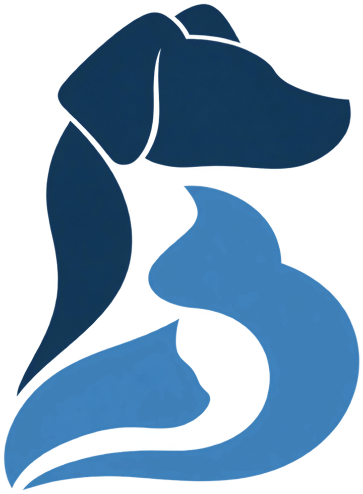

Гематома ушной раковины у кошек и собак
Скопление крови между кожей и хрящом уха. Обычно появляется, когда питомец трясёт головой и чешет ухо из-за отита или аллергии.

Коротко
- Длительность
- 30–45 минут
- Анестезия
- Общий наркоз
- Стационар
- В день операции
- Швы
- Через 14–21 день
- Восстановление
- 3 недели
Что это за операция
Гематома ушной раковины появляется, когда при сильной тряске головой или расчёсывании рвутся мелкие сосуды между кожей и хрящом уха. Ухо за несколько часов превращается в мягкую горячую «подушку».
Если гематому не лечить, кровь со временем замещается рубцом и ухо сморщивается. Почти всегда за гематомой стоит другая проблема — отит, ушной клещ или аллергия, — и её нужно лечить одновременно.
Когда нужна операция
- ушная раковина резко увеличилась, стала мягкой и тёплой
- гематома не проходит или возвращается после пункции
Варианты и цены
| Вариант | Цена |
|---|---|
| Одно ухо | 10 000 ₽ |
Цена операции указана без наркоза, анализов, стационара и препаратов. Точную смету врач называет после осмотра.
Обследование и подготовка
- Осмотр слухового прохода и мазок: важно найти причину, по которой питомец тряс головой
- Осмотр и сбор анамнеза: какие болезни были, какие лекарства принимает питомец
- Анализы крови, а по показаниям — УЗИ, рентген, ЭКГ
- Голод 8–12 часов перед наркозом; воду — по рекомендации врача
- Смета и план операции до её начала
Как проходит операция
- Наркоз, обработка уха
- Разрез вдоль внутренней поверхности ушной раковины
- Удаление сгустков и промывание полости
- Сквозные матрацные швы, которые прижимают кожу к хрящу
- При необходимости — фиксирующая повязка
Восстановление по дням
Ухо может быть зафиксировано повязкой. Важно лечить отит, иначе питомец снова начнёт трясти головой. Швы снимают примерно через 2–3 недели.
- День операцииПитомец просыпается под наблюдением и обычно уезжает домой в тот же день. Вечером возможны сонливость и неуверенная походка.
- 1–3 деньВозвращаются аппетит и интерес к жизни. Обезболивающие — по схеме, шов осматриваем каждый день.
- 4–10 деньОбычная жизнь с ограничениями: без прыжков и активных игр, воротник или попона.
- 10–14 деньКонтрольный осмотр и снятие швов. После этого ограничения обычно снимают.
Сроки ориентировочные: врач скорректирует их по ходу восстановления.
Уход дома
- Воротник или послеоперационная попона — пока не снимут швы
- Обезболивающие и другие препараты — строго по схеме, не отменяйте их сами
- Каждый день осматривайте шов: в первые дни допустимы лёгкое покраснение и небольшой отёк
- В первые сутки кормите небольшими порциями
- Лечите ухо по схеме врача: если отит останется, питомец снова начнёт трясти головой
- Не давайте снимать воротник и повязку
Возможные осложнения
Повторное появление гематомы, если не устранена причина, деформация уха («сморщенное» ухо) при позднем лечении.
Прогноз
При одновременном лечении причины ухо обычно заживает без деформации. Повторная гематома возможна, если отит или аллергию не удаётся контролировать.
Обсудим ваш случай
Пришлите анализы, снимки и заключения — посмотрю и отвечу, нужна ли операция и как к ней подготовиться.
Источники и дата проверки
Материал подготовлен по учебникам и клиническим руководствам по ветеринарной хирургии и проверен 22 октября 2026.
- Fossum T. W. (ред.). Small Animal Surgery. 5-е изд. Philadelphia: Elsevier, 2019.
- Johnston S. A., Tobias K. M. (ред.). Veterinary Surgery: Small Animal. 2-е изд. St. Louis: Elsevier, 2018.
- American College of Veterinary Surgeons. Small Animal Topics: https://www.acvs.org/small-animal/aural-hematoma/
Информация носит ознакомительный характер и не заменяет осмотр. Нужна ли операция и какая, решает врач после обследования.
Частые вопросы
Может ли гематома рассосаться сама?
Иногда небольшая гематома рассасывается, но ухо при этом часто деформируется. Хирургическое лечение даёт лучший косметический результат.
Почему нельзя просто откачать кровь шприцем?
После пункции полость часто снова заполняется. Швы удерживают кожу прижатой к хрящу, пока ткани срастаются.
Сколько длится операция?
Обычно 30–45 минут. Точное время зависит от размера питомца и того, что хирург увидит во время операции.
Когда можно забрать питомца домой?
В день операции. Домой отпускаем, когда питомец проснулся, стабилен и вы получили письменные рекомендации.
Когда снимают швы?
Через 14–21 день. Если швы внутрикожные или рассасывающиеся, снимать их не нужно.